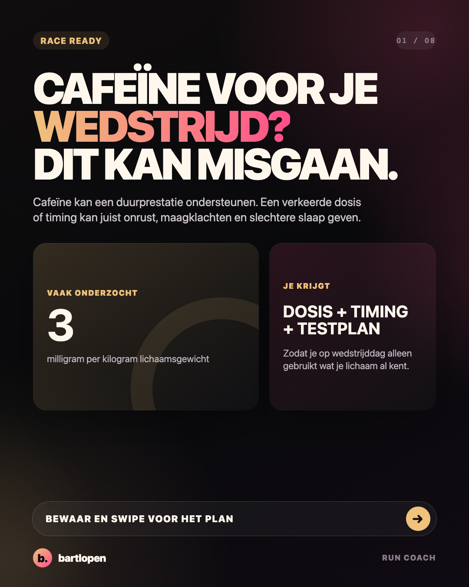
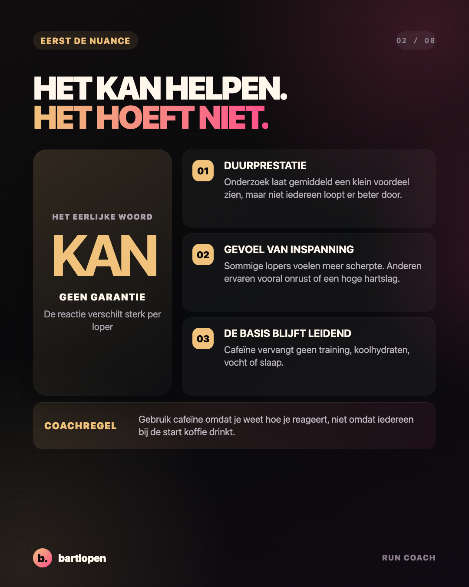
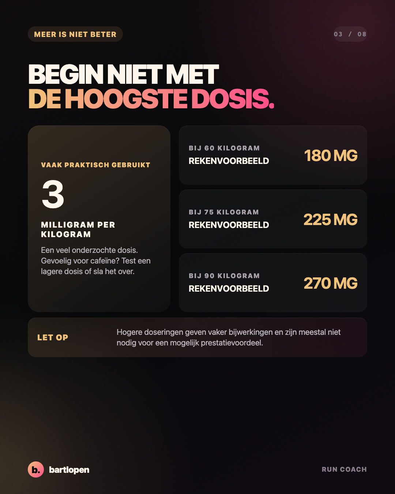
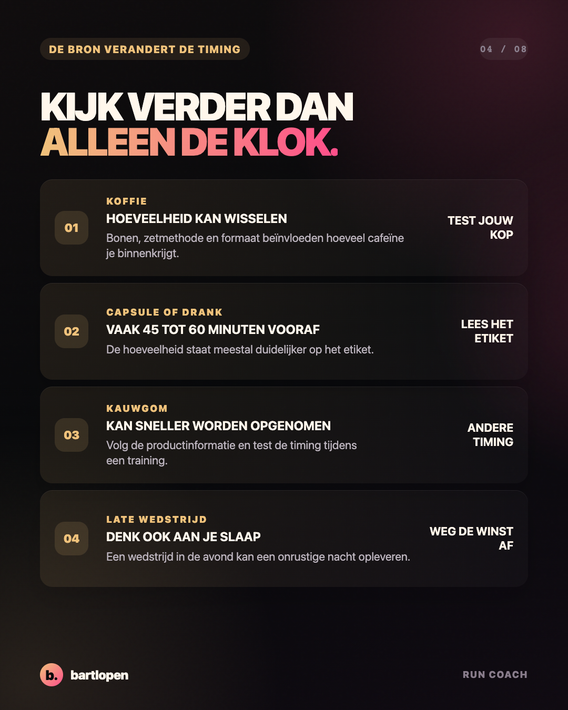
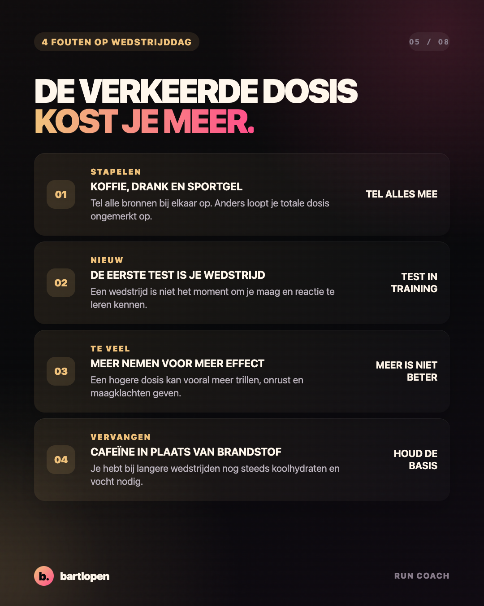
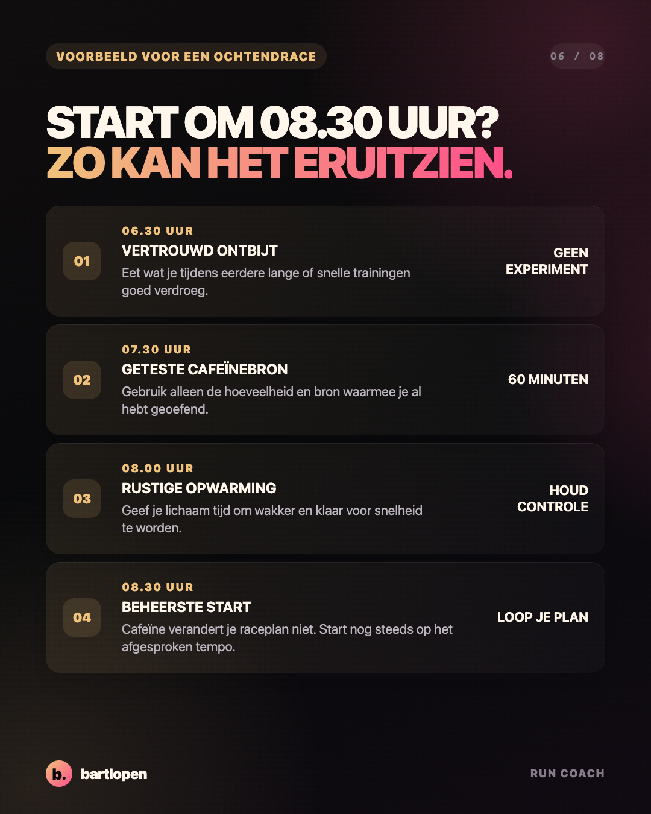
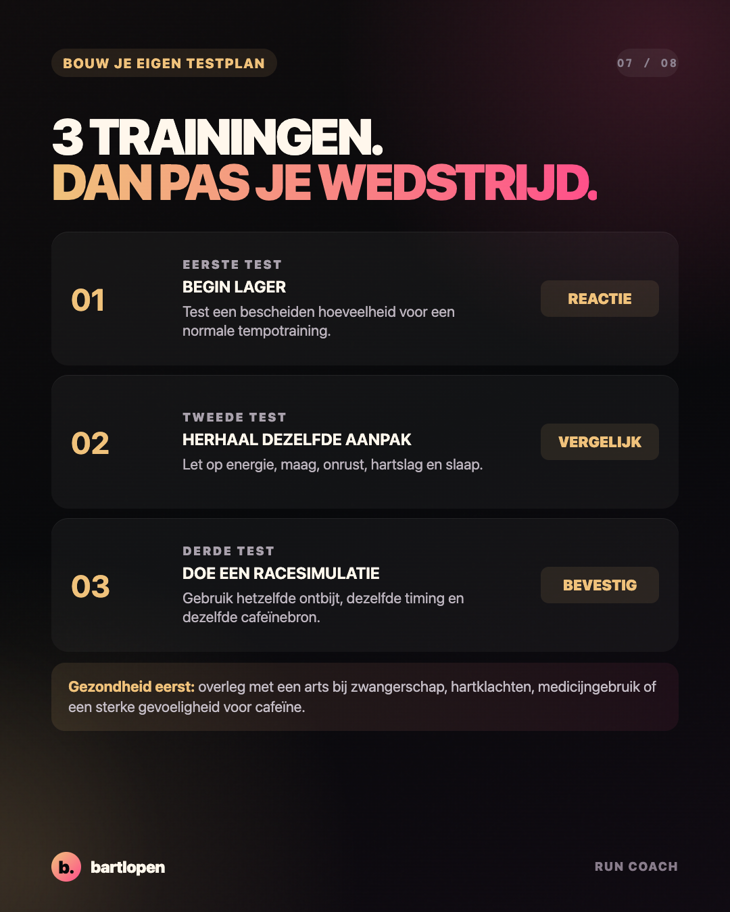
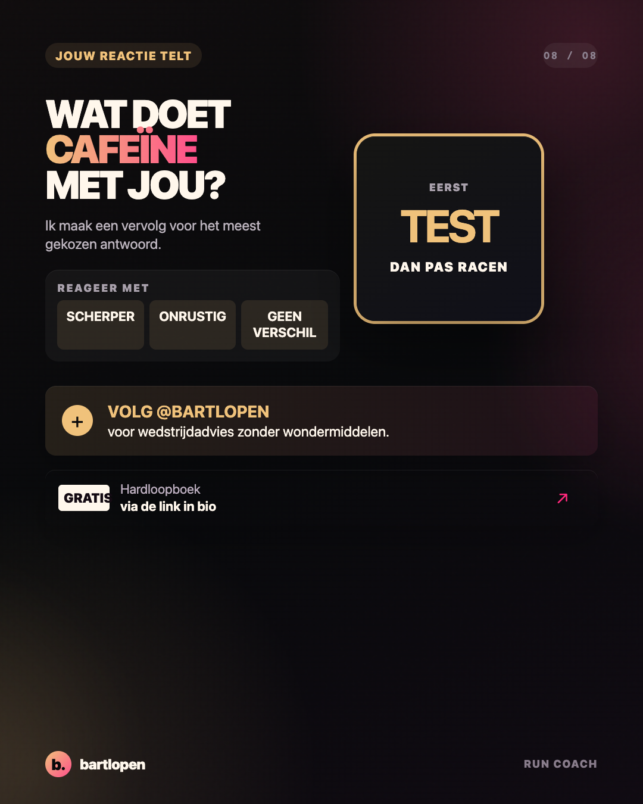

SLIDE 01 ↗Cafeïne voor
je wedstrijd?
Acht slides over mogelijke voordelen, dosis, timing, verschillende bronnen, bijwerkingen en een veilig testplan voor hardlopers.

SLIDE 02 ↗
SLIDE 03 ↗
SLIDE 04 ↗
SLIDE 05 ↗
SLIDE 06 ↗
SLIDE 07 ↗
SLIDE 08 ↗Caption
CAFEÏNE KAN HELPEN. MEER IS NIET AUTOMATISCH BETER. 👀 Een kop koffie of cafeïneproduct voor je wedstrijd klinkt simpel. Toch maken dosis, timing en jouw persoonlijke reactie een groot verschil. Onthoud dit: ✅ test alles eerst tijdens een training ✅ tel koffie, drank, kauwgom en sportgels bij elkaar op ✅ gebruik alleen een dosis die je goed verdraagt ✅ laat cafeïne nooit je brandstof, vocht of slaap vervangen ✅ denk bij een avondwedstrijd ook aan de nacht erna Ongeveer 3 milligram per kilogram lichaamsgewicht is een veel onderzochte dosis. Dat betekent niet dat jij dit nodig hebt. Gevoelige lopers kunnen beter een lagere dosis testen of cafeïne helemaal overslaan. De beste aanpak is niet de hoogste dosis. Het is de aanpak waarvan je al weet hoe je lichaam erop reageert. Wat doet cafeïne met jou: scherper, onrustig of geen verschil? 👇 #hardlopen #cafeine #wedstrijdtips #sportvoeding #hardlooptips #runningtips #bartlopen
Onderbouwing: het standpunt van de ISSN over cafeïne en sportprestaties, een systematische review naar cafeïne en duurprestaties, het standpunt van de ISSN over koffie en sport en een systematische review naar cafeïne en slaap. De dosis en tijdlijn zijn coachvoorbeelden en geen individueel medisch advies.